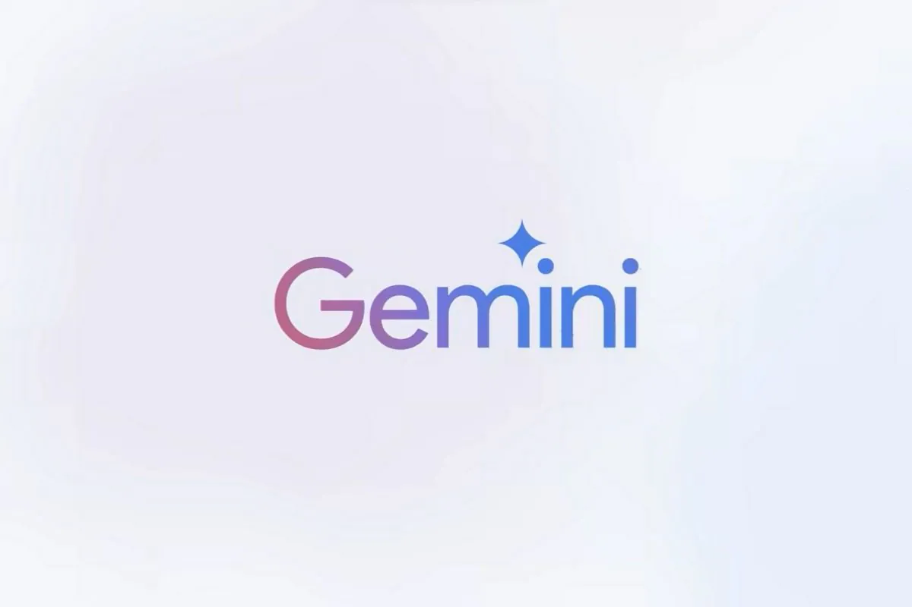

Here are our Screenshots of the AI Assistant :
Build :
It is build with our own UI Design and powered by Official Gemini AI pastly named Bard AI tool Integration. Thanks to APIs [ Application Programming Interface ] which helps us in integrating the AI Model to my project.

I have added some features like AI Response text to speech, Custom UI Design.
Advantages :
Using this AI assistant, you have not the work to open the browser , search for AI and get into the website, Login and then the Loadings.... Simply Open and Ask in our Tool skip the login process and Ads.
Disadvantages :
As it is a No-Budget Project, we used a Free API for Cost-Cut. It lacks in the AI Imagine & Image Generation sides But, don't worry !
I've alternatively have a solution for this in my Imagen Component.